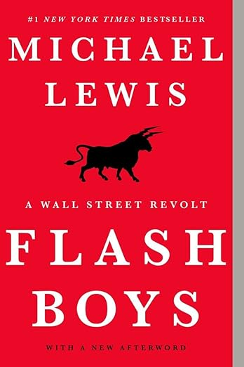
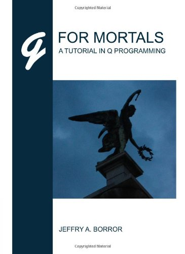
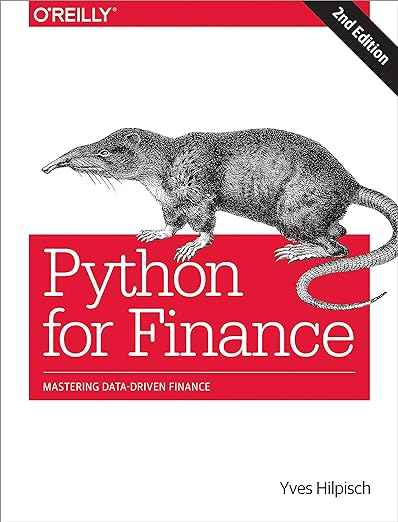

My wife and I like to travel as much as possible. In the past four years (not including the covid lockdown), we have travelled to the Amalfi Coast, Bali, Thailand, Hawaii, London, and Paris.
My favorite restaurant is Sushi Noz. My wife and I try and go to Sushi Noz, once or twice a year mainly because we are fanatics about Omakase and this is one of the best in NYC. We always have a great time here.
I have loads of favorite foods so its tough to choose one. But I am a sweets guy and my favorite dessert of all time is a chocolate souffle
I hate to admit this but I am not an avid reader. Most of my reading involves content for my job so here is the top 4 that I use / have read recently. Not necessarily my favorties
| Book Name | Cover | Author | Summary |
|---|---|---|---|
| Greenlights | Matthew McConaughey | Story of success and failures of Matthew McConaughey from childhood to stardom | |
| Flash Boys |  | Michael Lewis | A small group of Wall Street iconoclasts realize that the U.S. stock market has been rigged for the benefit of insiders. They band together―some of them walking away from seven-figure salaries―to investigate, expose, and reform the insidious new ways that Wall Street generates profits. |
| Q For Mortals |  | Jeffry A. Borror | The go to reference book for anything and everything Q (for the mortals and not the Q gods as the KDB fanatics call it). |
| Python for Finance |  | Yves Hilpisch | A good resource for data analysis in the financial world using Python 3. I reference this time to time. |